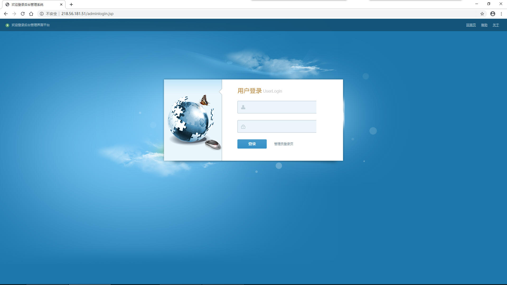
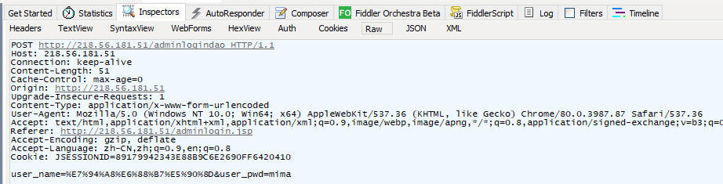
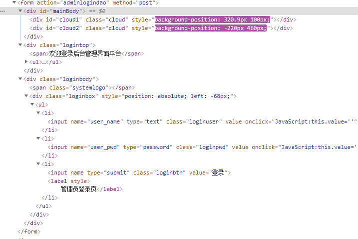

这里是关于Admin页面的解释
页面链接:http://218.56.181.51/adminlogin.jsp

这里是关于学校阅卷系统的管理员登录界面的解释，这个页面存在于上方的链接
目前的发现为:账户之一为“admin”而密码不清楚
登录后可以对于学校的信息和各大权限组进行管理
登录请求研究：
登录时发送一个HTTP:Post的请求，请求头如下

同时，其实登录界面有两个阴阳界面
一个是http://218.56.181.51/adminlogindao
另外一个则是http://218.56.181.51/adminlogin.jsp
这里的发现是假如是进入第二网址，那么会在开始有一个alert的弹窗
请求头的最终发送方向也是到第二个网址

最后发现，admin.jsp和adminlogindao都是登录界面
但是admin.jsp登录错误之后不会自身alert自己的不正确弹窗
而是跳转到adminlogindao，开始就会刷新弹窗，假如错误就会刷新界面
而假如是正确的密码，那么就会直接跳转进入后台，而不会显示
Hack思路提供:可以使用Node.js双工流Net库进行Post请求发送